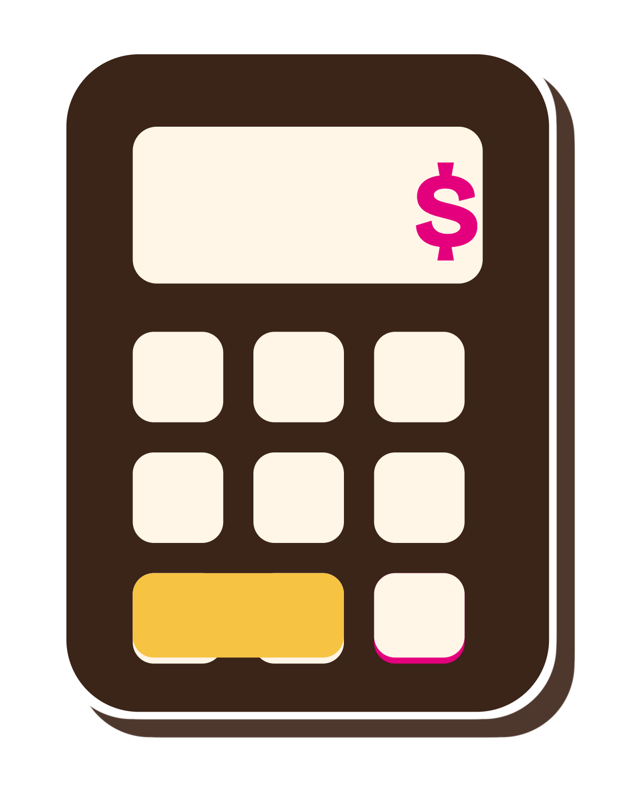
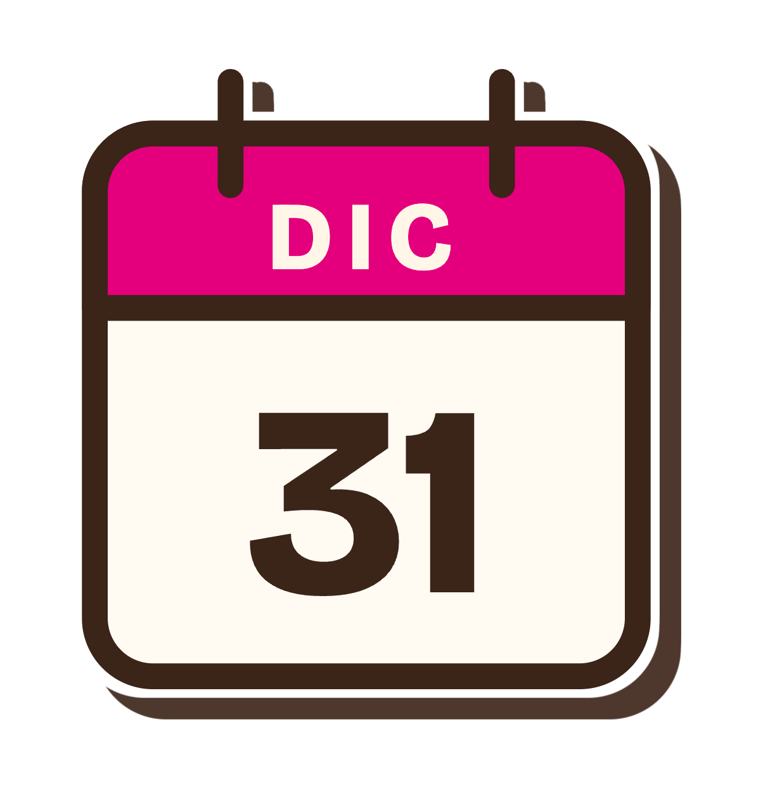

Impuestos · Contabilidad · Finanzas personales
El SAT ytu dinero,en orden.
Tus obligaciones con el SAT explicadas paso a paso, tu declaración sin sorpresas y tus números claros.


¿Cuánto te regresa una deducción?
Menos de lo que crees: cada peso que deduces te regresa lo que pagas de impuesto sobre él, no el peso completo. Muévele, no te pedimos nada.
Tu tasa más alta (sube con lo que ganas)
Tasas de la tarifa anual del artículo 152 de la LISR. Tienen topes y requisitos: es un ejemplo, cada caso tiene sus detalles.
Tus trámites, sin perderte en el portal
Paso a paso, con la pantalla real.
- RFC y e.firma
- Constancia de situación fiscal
- Buzón tributario y cartas
La anual, sin sorpresas
Si estás obligado, qué deducir y cuánto te regresan de verdad.
- Obligación
- Deducciones personales
- Saldos a favor
Tu dinero, en claro
Lo que entra, lo que sale y lo que te queda.
- Ingresos extra
- Finanzas sanas
- Estados financieros básicos
Una duda, un video.
Como una consultoría, cada semana y sin costo. Cada video arranca con la pregunta tal cual, y la contesta completa.
La primera serie“Si solo tengo sueldo, ¿tengo que declarar?”
Cuándo sí estás obligado (y cuándo no)
El monto que lo cambia todo, dos patrones a la vez y qué pasa si te sale a pagar.
Deducciones: cuánto te regresan de verdad
Cada peso que deduces no te regresa un peso. Lo hacemos con números.
Sueldo y algo más
Intereses, Sofipo, casa de bolsa o una herencia: cuándo se suman y cuándo no.
Aquí resuelvo las dudas que más me traen mis clientes, para que tú las resuelvas sin pagar una consulta.
Israel Castro, contador público y socio de S & I Castro Consultores, el despacho familiar.
Aprende con nosotros… o déjalo en nuestras manos.
Ir al despacho
Qué hacer con el SAT, mes por mes.
Una guía gratis para no fallar con el SAT, para pegar en el refri.
- EneHaz la cuenta: ¿te toca presentar?
- FebLlegan tus constancias
- MarRevisa tus facturas en el portal
- AbrTu anual: vence el 30
- MaySigue tu saldo a favor
- JunRevisa tu 32-D
- JulAbre tu buzón tributario
- Ago¿Cobras por tu cuenta? Alta
- SepPaquete Económico
- OctRevisa tu e.firma
- NovPlanea tu aguinaldo
- DicPide facturas y paga antes del 31
Los meses que no se mueven
- Los impuestos sin rodeos
- El calendario de 12 meses
- El checklist para palomear
Revisa tu correo.
Lo que más me preguntan.
¿Por qué pagamos impuestos?
Porque así se paga lo que es de todos: escuelas, hospitales, carreteras. La Constitución dice que contribuimos de forma proporcional: quien gana más, paga más. Por eso el ISR sube por escalones, y la parte de tu ingreso que pasa de cierto nivel paga una tasa más alta.
¿Por qué me retienen si no le debo nada a nadie?
Retener es cobrar por adelantado a nombre del SAT. Tu patrón, tu banco o la empresa a la que le cobras separan una parte y se la mandan al SAT por ti. No es un impuesto extra: es un anticipo, y en tu declaración anual se resta de lo que te toca.
¿Por qué hay gastos que no puedo pagar en efectivo?
Porque el SAT necesita poder seguir el dinero. Tus deducciones personales (doctor, dentista, hospital, entre otras) solo cuentan si las pagas con tarjeta, transferencia o cheque nominativo. Pagadas en efectivo, la factura no te sirve aunque la tengas.
¿Qué pasa si tenía que presentar una declaración y no lo hice?
Puede haber multa por cada declaración, recargos si había impuesto a pagar y tu opinión de cumplimiento en negativo. Y si te tocaba saldo a favor, sin la declaración ese dinero se queda en el SAT. Si te pones al corriente antes de que el SAT te lo pida, por lo general no hay multa.
Si mi compañero gana lo mismo que yo, ¿por qué a él le devuelven y a mí no?
Casi nunca es trampa. Lo más común es que él pidió factura de sus gastos médicos, los pagó con tarjeta y los dedujo. Otras razones: tener dos patrones a la vez, otros ingresos como intereses, o dejar el trabajo antes de diciembre.
¿Hacemos algo juntos?
Videos en colaboración, una charla para tu equipo o tu comunidad.
- Colaboraciones
- Charlas
- Prensa